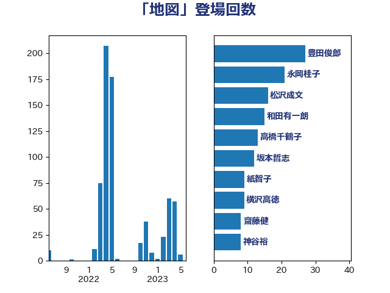

単語「地図」

| 豊田俊郎 | 自由民主党 | 27 回 |
| 永岡桂子 | 自由民主党 | 21 回 |
| 松沢成文 | 日本維新の会 | 16 回 |
| 和田有一朗 | 日本維新の会 | 15 回 |
| 高橋千鶴子 | 日本共産党 | 13 回 |
| 坂本哲志 | 自由民主党 | 12 回 |
| 紙智子 | 日本共産党 | 9 回 |
| 横沢高徳 | 立憲民主党 | 9 回 |
| 齋藤健 | 自由民主党 | 8 回 |
| 神谷裕 | 立憲民主党 | 8 回 |
| 田村貴昭 | 日本共産党 | 8 回 |
| 重徳和彦 | 立憲民主党 | 7 回 |
| 谷合正明 | 公明党 | 7 回 |
| 武部新 | 自由民主党 | 7 回 |
| 小山展弘 | 立憲民主党 | 7 回 |
| 湯原俊二 | 立憲民主党 | 6 回 |
| 岬麻紀 | 日本維新の会 | 6 回 |
| 古川禎久 | 自由民主党 | 6 回 |
| 須藤元気 | 無所属 | 5 回 |
| 野村哲郎 | 自由民主党 | 5 回 |
| 渡辺創 | 立憲民主党 | 5 回 |
| 池下卓 | 日本維新の会 | 5 回 |
| 梅村みずほ | 日本維新の会 | 5 回 |
| 市村浩一郎 | 日本維新の会 | 5 回 |
| 谷田川元 | 立憲民主党 | 4 回 |
| 葉梨康弘 | 自由民主党 | 4 回 |
| 簗和生 | 自由民主党 | 4 回 |
| 稲津久 | 公明党 | 4 回 |
| 田名部匡代 | 立憲民主党 | 4 回 |
| 津島淳 | 自由民主党 | 4 回 |
| 池畑浩太朗 | 日本維新の会 | 4 回 |
| 宮本岳志 | 日本共産党 | 4 回 |
| 宮下一郎 | 自由民主党 | 4 回 |
| 大野泰正 | 自由民主党 | 4 回 |
| 嘉田由紀子 | 無所属 | 4 回 |
| 下条みつ | 立憲民主党 | 4 回 |
| 鈴木敦 | 国民民主党 | 3 回 |
| 舟山康江 | 国民民主党 | 3 回 |
| 緑川貴士 | 立憲民主党 | 3 回 |
| 斉藤鉄夫 | 公明党 | 3 回 |
| 山田勝彦 | 立憲民主党 | 3 回 |
| 山崎誠 | 立憲民主党 | 3 回 |
| 山下芳生 | 日本共産党 | 3 回 |
| 尾身朝子 | 自由民主党 | 3 回 |
| 小沼巧 | 立憲民主党 | 3 回 |
| 宮崎雅夫 | 自由民主党 | 3 回 |
| 勝部賢志 | 立憲民主党 | 3 回 |
| 中田宏 | 自由民主党 | 3 回 |
| 下野六太 | 公明党 | 3 回 |
| 高良鉄美 | 無所属 | 2 回 |
| 門山宏哲 | 自由民主党 | 2 回 |
| 長友慎治 | 国民民主党 | 2 回 |
| 近藤和也 | 立憲民主党 | 2 回 |
| 西村康稔 | 自由民主党 | 2 回 |
| 荒井優 | 立憲民主党 | 2 回 |
| 若林健太 | 自由民主党 | 2 回 |
| 渡辺周 | 立憲民主党 | 2 回 |
| 渡辺博道 | 自由民主党 | 2 回 |
| 森田俊和 | 立憲民主党 | 2 回 |
| 梅村聡 | 日本維新の会 | 2 回 |
| 松本剛明 | 自由民主党 | 2 回 |
| 杉本和巳 | 日本維新の会 | 2 回 |
| 庄子賢一 | 公明党 | 2 回 |
| 川合孝典 | 国民民主党 | 2 回 |
| 山添拓 | 日本共産党 | 2 回 |
| 山本佐知子 | 自由民主党 | 2 回 |
| 小沢雅仁 | 立憲民主党 | 2 回 |
| 寺田稔 | 自由民主党 | 2 回 |
| 大島敦 | 立憲民主党 | 2 回 |
| 吉田統彦 | 立憲民主党 | 2 回 |
| 北神圭朗 | 無所属 | 2 回 |
| 佐藤啓 | 自由民主党 | 2 回 |
| 住吉寛紀 | 日本維新の会 | 2 回 |
| 中村裕之 | 自由民主党 | 2 回 |
| 高橋英明 | 日本維新の会 | 1 回 |
| 高木かおり | 日本維新の会 | 1 回 |
| 青島健太 | 日本維新の会 | 1 回 |
| 阿部弘樹 | 日本維新の会 | 1 回 |
| 鈴木宗男 | 日本維新の会 | 1 回 |
| 金城泰邦 | 公明党 | 1 回 |
| 野間健 | 立憲民主党 | 1 回 |
| 進藤金日子 | 自由民主党 | 1 回 |
| 足立敏之 | 自由民主党 | 1 回 |
| 赤羽一嘉 | 公明党 | 1 回 |
| 赤嶺政賢 | 日本共産党 | 1 回 |
| 萩生田光一 | 自由民主党 | 1 回 |
| 若宮健嗣 | 自由民主党 | 1 回 |
| 芳賀道也 | 国民民主党 | 1 回 |
| 竹詰仁 | 国民民主党 | 1 回 |
| 穀田恵二 | 日本共産党 | 1 回 |
| 石川大我 | 立憲民主党 | 1 回 |
| 石川博崇 | 公明党 | 1 回 |
| 矢倉克夫 | 公明党 | 1 回 |
| 田村智子 | 日本共産党 | 1 回 |
| 漆間譲司 | 日本維新の会 | 1 回 |
| 櫛渕万里 | れいわ新選組 | 1 回 |
| 梅谷守 | 立憲民主党 | 1 回 |
| 林芳正 | 自由民主党 | 1 回 |
| 松本尚 | 自由民主党 | 1 回 |
| 松木けんこう | 立憲民主党 | 1 回 |
| 松川るい | 自由民主党 | 1 回 |
| 新垣邦男 | 立憲民主党 | 1 回 |
| 広瀬めぐみ | 自由民主党 | 1 回 |
| 岩渕友 | 日本共産党 | 1 回 |
| 山田賢司 | 自由民主党 | 1 回 |
| 山田宏 | 自由民主党 | 1 回 |
| 山岸一生 | 立憲民主党 | 1 回 |
| 尾崎正直 | 自由民主党 | 1 回 |
| 小西洋之 | 立憲民主党 | 1 回 |
| 宮崎政久 | 自由民主党 | 1 回 |
| 大石あきこ | れいわ新選組 | 1 回 |
| 塩崎彰久 | 自由民主党 | 1 回 |
| 堀場幸子 | 日本維新の会 | 1 回 |
| 和田政宗 | 自由民主党 | 1 回 |
| 吉良州司 | 無所属 | 1 回 |
| 吉川元 | 立憲民主党 | 1 回 |
| 古賀之士 | 立憲民主党 | 1 回 |
| 古屋範子 | 公明党 | 1 回 |
| 伊波洋一 | 無所属 | 1 回 |
| 仁比聡平 | 日本共産党 | 1 回 |
| 井坂信彦 | 立憲民主党 | 1 回 |
| 井上哲士 | 日本共産党 | 1 回 |
| 中司宏 | 日本維新の会 | 1 回 |
| 上田清司 | 国民民主党 | 1 回 |
| 三上えり | 立憲民主党 | 1 回 |